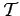

Inhalt Index DeskTop Bronstein
Integraltransformationen Begriff der Integraltransformation
Sind f1(t) und f2(t) transformierbare Funktionen, dann gilt
wobei k1 und k2 beliebige Zahlen sein können. Das bedeutet, daß eine Integraltransformation eine lineare Operation auf der Menge T der -transformierbaren Funktionen darstellt.